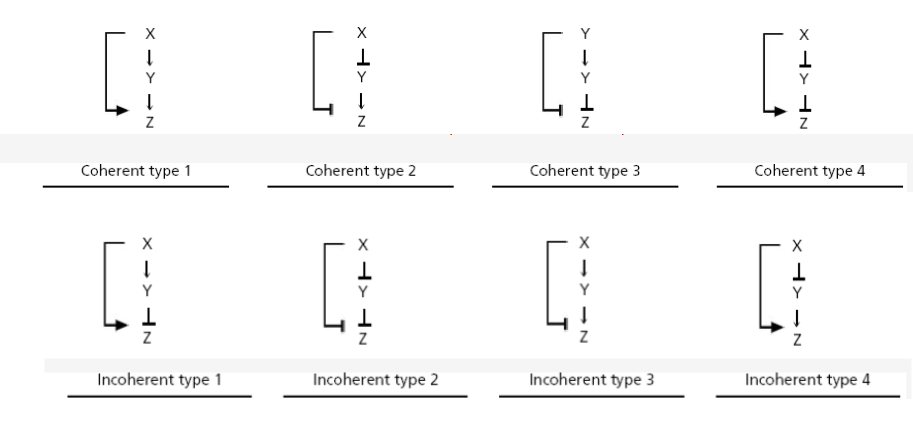
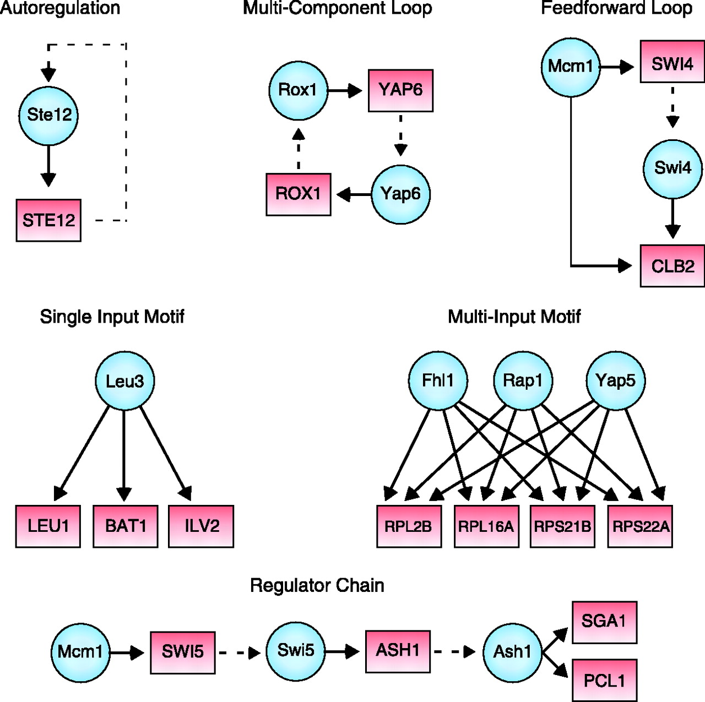

Network Motifs Exercises
Identifying Feed-Forward Loops and More Complex Motifs
Exercise 1: Modify the Jupyter notebook provided in the tutorial on loops to count the number of feed-forward loops in the transcription factor network for E. coli.
There are eight types of feed-forward loops based on the eight different ways in which we can label the edges in the network with a “+” or a “-“ based on upregulation or downregulation.
 The eight types of feed-forward loops.1
Exercise 2: Modify the Jupyter notebook to count the number of loops of each type present in the E. coli transcription factor network.
Exercise 3: How many feed-forward loops would you expect to see in a random network having the same number of nodes as the E. coli transcription factor network? How does this compare to your answers to the previous two questions?
More complex motifs may require more computational power to discover.
 Example of different motifs within the S. Cerevisiae network.2
Exercise 4: Can you modify our Jupyter Notebook for motif finding to identify circular loops of transcription factor regulation, such as the multi-component loop above?
Negative Autoregulation
Using the NAR_comparison_equal.blend file from the negative autoregulation tutorial, increase the reaction rate of X1 -> X1 + Y1 to 4e4, so that the table should now look like the following:
| Reactants | Products | Forward Rate |
|---|---|---|
| X1’ | X1’ + Y1’ | 4e5 |
| X2’ | X2’ + Y2’ | 4e2 |
| Y1’ | NULL | 4e2 |
| Y2’ | NULL | 4e2 |
| Y2’ + Y2’ | Y2’ | 4e2 |
If we plot this graph, we can see the steady states of Y1 and Y2 are different once again.
Exercise 1: Can you repair the system to find the appropriate reaction rate for X2 -> X2 + Y2 to make the steady states equal once more? Are you able to adjust the reaction Y2 + Y2 -> Y2 as well? Do the reaction rates scale at the same rate?
Exercise 2: One way for the cell to apply stronger “brakes” to the simple regulation rate would be to simply increase the degradation rate, rather than implement negative autoregulation. Why do you think that the cell doesn’t do this?
Implementing More Network Motifs
Exercise 1: Use the NFSim tutorial implementing the repressilator as a basis to replicate the other network motif tutorials presented in this module.
-
Image adapted from Mangan, S., & Alon, U. (2003). Structure and function of the feed-forward loop network motif. Proceedings of the National Academy of Sciences of the United States of America, 100(21), 11980–11985. https://doi.org/10.1073/pnas.2133841100 ↩
-
Lee, T. I., Rinaldi, N. J., Robert, F., Odom, D. T., Bar-Joseph, Z., Gerber, G. K., … Young, R. A. (2002). Transcriptional regulatory networks in Saccharomyces cerevisiae. Science, 298(5594), 799–804. https://doi.org/10.1126/science.1075090 ↩